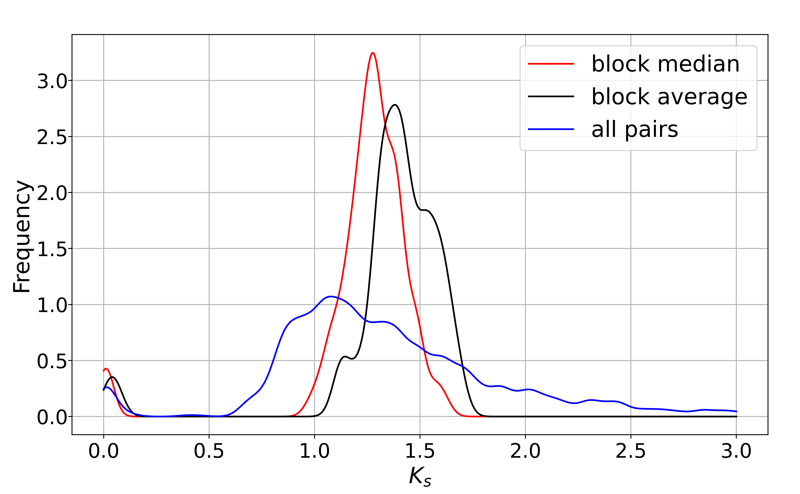

KsPeaks¶
kspeaks is a simple way to get ks peaks.
Parameters |
Standards and instructions |
blockinfo |
Type: file | Default: - Output result of parameter bi |
pvalue |
Type: float | Default: 0.05 Evaluate the compactness and uniqueness of collinear blocks, the range is 0-1, the better collinearity range is 0-0.2. |
tandem |
Type:str | Default: true The criterion is that there are no more than 200 genes with a difference in genetic location. |
block_length |
Type: int | Default: 5 Minimum length of collinear blocks. |
ks_area |
Type: str | Default: 0,10 Show the range of ks. |
multiple |
Type: int | Default: 1 The best number of homologous genes shown with red dots. |
homo |
Type: int [1-5] Default: 1 Evaluate the ratio of the best homologous gene pairs of collinearity block, with a range of -1, 1. |
fontsize |
Type: str Default: 9 The size of the font. |
area |
Type: str Default: 0,3 Show the range of ks. |
figsize |
Type: int,int | Default: 10,10 Control the proportion of the size of the saved picture. |
savefig |
Type: {*. png, *. pdf, *. svg} | Default: *. png Save pictures support png, pdf, svg formats. |
savefile |
Type: file | Default: * .csv The resulting file. |
Parameters
Use command to enter the folder wgdi -kp ? >> total.conf Take out the parameter file.:
[kspeaks]
blockinfo = block information
pvalue = 0.05
tandem = true
block_ length = int number
ks_area = 0,10
multiple = 1
homo = 0,1
fontsize = 9
area = 0,3
figsize = 10,6.18
savefig = saving image
savefile = ks medain savefile
Quick start
After the parameters are modified properly, then run wgdi -kp total.conf
Example
The original results are easily accessible at wgdi-example
